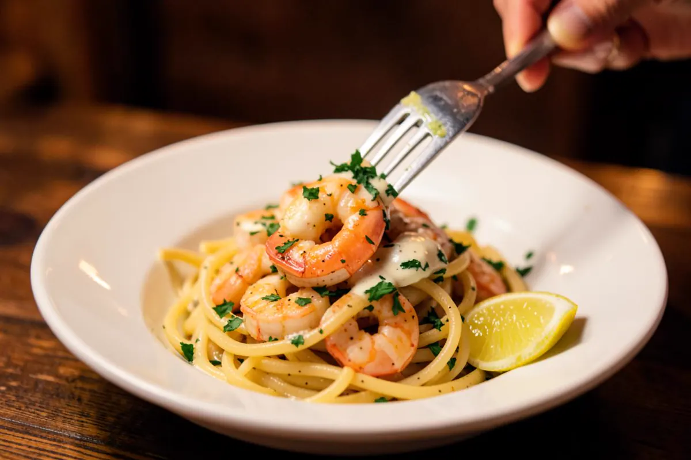

Shrimp Scampi

Illustrative image.
Shrimp scampi is a restaurant dish that belongs on a weeknight. Linguine, shrimp, garlic, white wine, butter and lemon come together in a single pan in under half an hour, and the sauce is nothing more than the pan juices emulsified with butter and a little pasta water.
The trick is to cook the shrimp first and remove them before building the sauce, so they do not turn rubbery while the wine reduces. Four servings take about twenty-five minutes once the pasta water is boiling.
Ingredients
- 12 oz linguine
- 1 lb large shrimp, peeled and deveined
- 4 tbsp butter, divided
- 3 tbsp olive oil
- 5 cloves garlic, minced
- 1/2 cup dry white wine
- 1/4 tsp red pepper flakes
- Juice of 1 lemon
- 1/4 cup fresh parsley, chopped
- Salt and pepper, to taste
Instructions
- Cook the linguine in salted boiling water until al dente. Reserve 1/2 cup pasta water, then drain.
- While the pasta cooks, heat olive oil and 2 tbsp butter in a large skillet over medium-high heat.
- Season the shrimp with salt and pepper, then add to the skillet. Cook for 1-2 minutes per side until pink and just cooked through. Remove and set aside.
- Add garlic and red pepper flakes to the same skillet, cooking for 30 seconds until fragrant.
- Pour in the white wine and simmer for 2-3 minutes, letting it reduce slightly.
- Stir in the remaining butter and lemon juice until the sauce is glossy.
- Return the shrimp to the pan along with the drained linguine, tossing to coat. Add a splash of reserved pasta water if needed to loosen the sauce.
- Stir in fresh parsley and serve immediately.
Why this recipe works
White wine and lemon give the sauce enough acidity to stand up to a generous amount of butter, and finishing the pasta in the pan lets the starch in the water thicken the sauce so it coats each strand. Cooking shrimp until just opaque keeps them tender.
Tips for success
- Cook the shrimp for about two minutes a side, then take them out while the sauce is finished.
- Use a dry white wine you would actually drink, such as pinot grigio or sauvignon blanc.
- Add the lemon juice off the heat so the sauce stays bright rather than bitter.
Substitutions that work
- Chicken broth with an extra squeeze of lemon can replace the wine, though the flavour will be less complex.
- Linguine, spaghetti or angel hair all work; angel hair cooks fastest, so start the sauce accordingly.
- Scallops or cubed firm white fish can stand in for the shrimp, adjusting the cooking time.
Storage and make-ahead
Refrigerate leftovers for two days. Reheat gently in a covered pan with a splash of water, since the butter sauce solidifies in the fridge. Shrimp should not be reheated more than once, and the dish does not freeze well.
Serving suggestions
Serve with crusty bread to mop the pan, and a simple green salad or grilled asparagus alongside. A glass of the wine used in the sauce is the obvious pairing.
Frequently asked questions
Why did my shrimp turn out rubbery?
They were overcooked. Shrimp need only two to three minutes a side, and they should be pulled as soon as they turn opaque and pink.
Can I make shrimp scampi without wine?
Yes. Use chicken broth with a tablespoon of lemon juice and a little extra butter, and let it reduce slightly before adding the shrimp back.
Can I use frozen shrimp?
Yes. Thaw them in the refrigerator overnight and pat them dry, or run them under cold water for a few minutes before cooking.